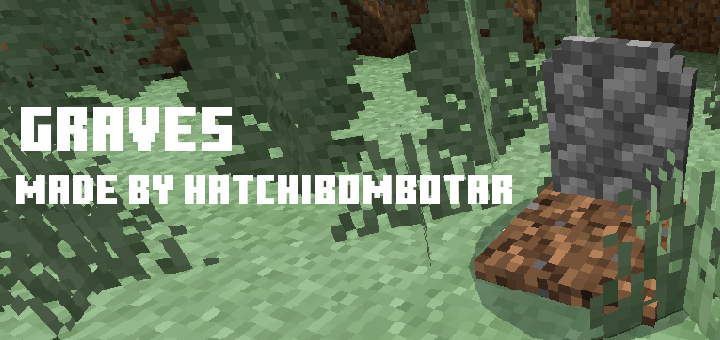
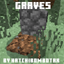
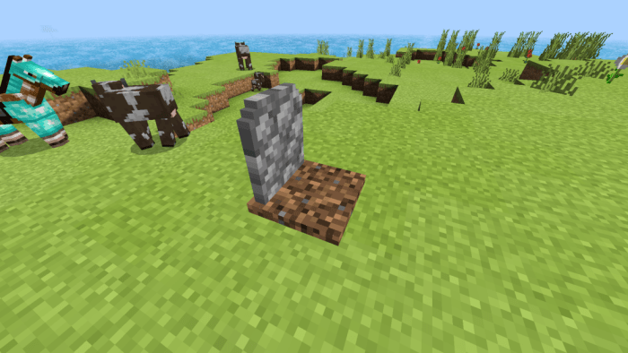
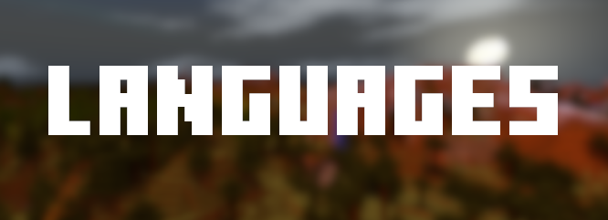

Have you ever gone out on an adventure only to die and have all your stuff despawn? In this addon all of your items are put in a gravestone when you die and you can go back and grab your stuff from your grave stone.

Graves
This Addon makes it so that a Grave Stone appears instantly once you die and it sucks all of your items into it ready for you to return to all of your stuff. It works just like a chest.

What they look like when you die

What Happens if you die in lava?
In lava the grave will not burn, sink or float.

All of my addons are compatible with all devices and all of my other addons. This pack takes advantage of the “player.json” file so may not be compatible with some other addons. For the best compatibility please put this addon at the top.

My addons currently support English, Spanish, Czech, Russian, Indonesian, Turkish, Greek and Chinese Traditional.
Important Messages:Currently there is a Minecraft bug that makes it so that if you or any other player destroys the gravestone some of the items will be destroyed so just take them out like a chest.